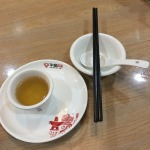
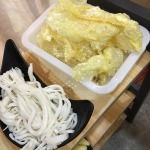
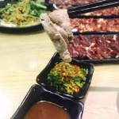
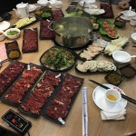
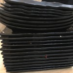
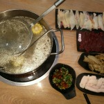
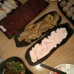

<div class="comment">
  <ul>
    <li class="clear">
     <div class="commentLeft">
      
    </div>
    <div class="commentRight">
      <p class="username"'>aesf_q</p>
      <span class="time">3月27日</span>
      <span class="star"></span>
      <p class="commentP">
        在成都吃完小龙坎以后，决定试试广州小龙坎对比一下。叫了三国演义=麻辣+清汤+番茄汤底，我当然是吃麻辣的那个【毛肚】即使是空运的，依然不够香，跟其他几家差不多 【千层肚】倒是牛味十足，越嚼越起劲，追加了一盘。 本想点铺满辣椒粉的生牛肉，在成都吃的时候又嫩又滑，看菜单以为是【霸王牛肉】，但霸王牛肉是熟牛肉片蘸满了辣椒粉，又咸又硬，最后才知道应该点【麻辣牛肉】才是生牛肉，只好下回试试了 【小酥肉】倒是炸得不错，不干，香脆。 【唯怡】解辣一流，还可以达到“漱口”的效果，不然吃啥都是一个味道。 人没有刚开时那么火爆，服务也还不错
      </p>
      <div class='commentImg'>
        
        
        
        
        
        
        
        
        
      </div>
    </div>
  </li>
</ul>
</div>
